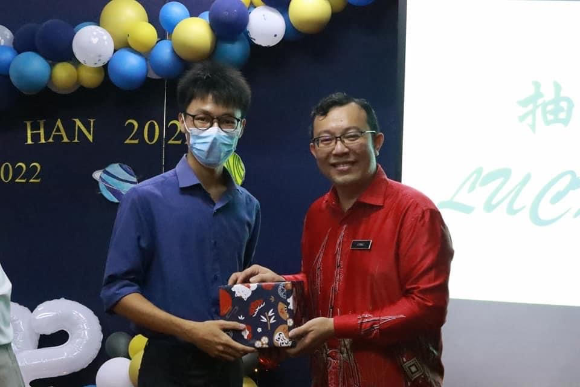
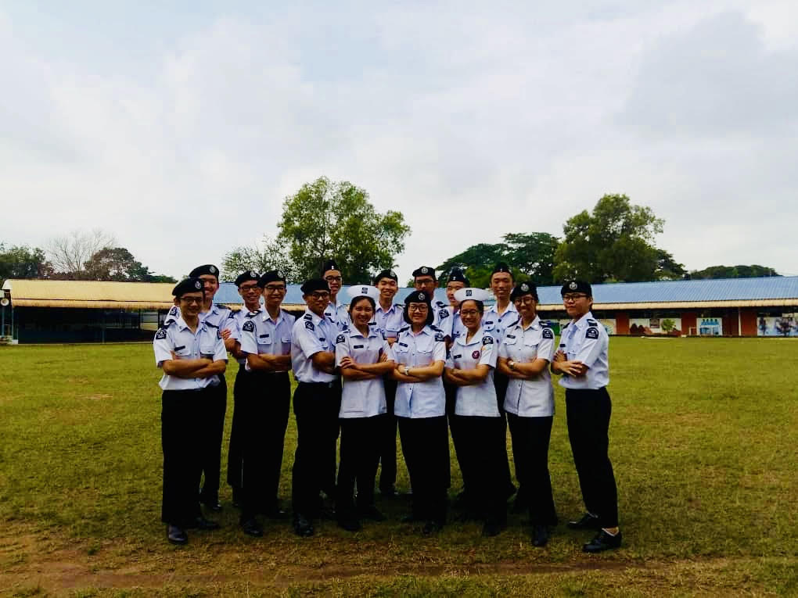

First time winning a lucky draw ^^
 Github
Github  Facebook
Facebook Instagram
Instagram

ST.John committee member batch 2018
| Age | 22 years old |
|---|---|
| Place of birth | Sungai Petani,Kedah |
| Astrological Sign | Leo |
| Favourite Artist | Jay Chou |
| Fun Facts |
|
Hello everyone, I'm Khoo Zi Yik from Sungai Petani, Kedah. Currently, I am a second year student in UNIMAS majoring in Computational Science. I studied at SIN MIN Secondary School and had a wonderful time there. After graduation, I decided to continue my studies and pursued Computer Science during my A-levels. During my time in secondary school, I served as the first aid captain for St. John Brigade, which developed my ability to adapt to different situations and work well in a team. I also held leadership positions as the President of the Recreation Club and Secretary of the Badminton Club. These experiences not only taught me valuable leadership and management skills, but also strengthened my ability to communicate and collaborate with others.
One of my favorite hobbies is playing badminton, which I am truly passionate about. Not only is it a fun and exhilarating sport, but it also helps me stay active and fit, which is important for maintaining a healthy lifestyle. I enjoy the challenge of playing badminton, whether it's in a friendly game with friends or in a more competitive setting.
Another hobby of mine is watching anime. Anime is a form of Japanese animation that tells a wide range of stories and appeals to a diverse audience. I find anime to be an enjoyable and fascinating form of entertainment, as it allows me to immerse myself in different worlds and explore unique characters and storylines